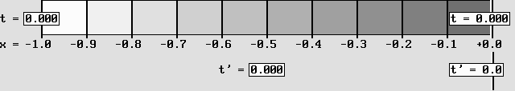
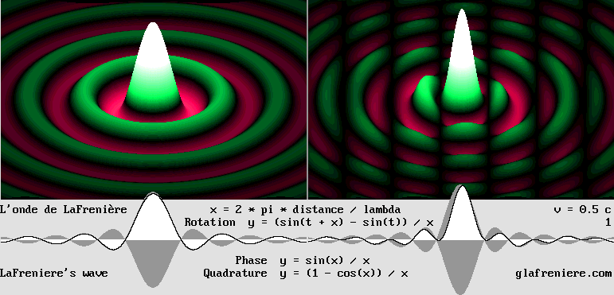
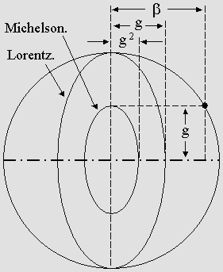
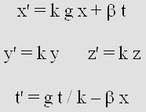
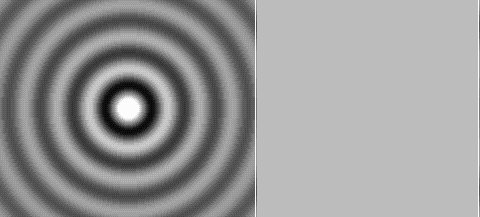
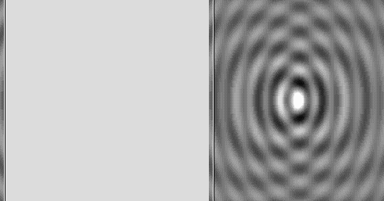
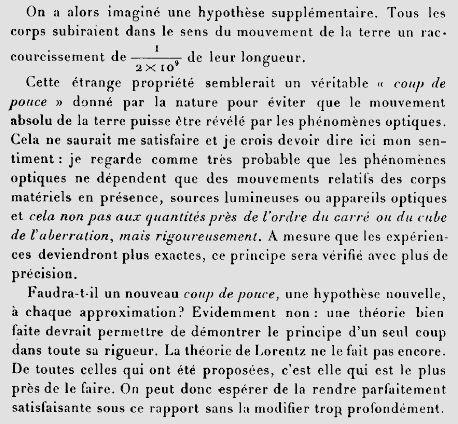

| 00 | 01 | 02 | 03 | 04 | 05 | 06 | 07 | 08 | 09 | 10 | 11| 12 | 13 | 14 | 15 | 16 | 17 | 18 | 19 | 20 | 21 | 22 | 23 | 24 | 25 | 26 | 27 | 28 | 29 | 30 | 31 | 32 | 33 | 34 |
THE TIME SCANNER
|
|
|
The Time Scanner produces a Doppler effect.
Inversely, it may also correct the Doppler effect, which was Woldemar Voigt's goal in 1887.
This device actually reproduces the Lorentz transformations.
If they are applied to a material body, the result is a length contraction, a slower rate of time and a time shift.
The Time Scanner is highly useful in order to understand Lorentzian Relativity.
Below are three videos showing this phenomenon more accurately.
You may also examine the FreeBASIC programs which produced these images:
|
In March 2004, I invented a scanner which is capable or reproducing the Lorentz transformations. The goal was to scan an animated scene in such a way that Lorentz's contraction occurs. Moreover, a scanner produces an image where events did not occur at the same time. I managed to scan the scene at different times which match Lorentz's famous local time, and this is why I called this device "the Time Scanner". The Time Scanner produces a Doppler effect which is clearly visible above. However, it may correct the Doppler effect as well. Such a reversibility is also the main characteristic of the Lorentz transformations. It was pointed out by Henri Poincare in 1904. As shown in the above animation, moving clocks indicate different times along the line of motion. This local time was discovered by Lorentz himself, albeit it could be deduced from Voigt's equations. Many successive images produced this way and displayed as a movie clip would reveal that the emitter frequency and the equivalent seconds would be slowed down according to Lorentz's contraction factor g. This was called "time dilation" but actually, moving clocks cannot transform time. They just tick slower. In addition, thanks to the vertical scale, one can check that the wavelength remains constant perpendicularly to the line of motion: y' = y; z' = z. Because the regular Doppler effect produces a wavelength contraction transversally, this slower Doppler effect is obviously a very special one. And finally, if the scene contains a lot of material bodies or emitters whose speed and direction is not the same, the Time Scanner is still capable of transforming all of them as if they were in a faster or in a slower frame of reference. It is capable of performing an unlimited number of transformations on an unlimited number of coordinates. Not just one at a time. It may also scan an entire 3-D scene, the scanner being a moving plane. Lorentz's equations simply cannot achieve such a complex result in just one operation. The Time Scanner proves to be the ultimate tool in order to study motion mechanics, motion optics, the Lorentz transformations, and Relativity. A moving observer is fooled by the Doppler effect. It should be well understood that because of the Doppler effect, the distance being equal, events observed at the rear occurred sooner. They are perceived later because the relative velocity of the waves propagating forward is slower: v' = v * (1 + beta). It is faster backward: v' = v * (1 – beta). The moving observer is unaware of this. He doesn't know anything about his movement and hence, he believes to be at rest. So the time shift is only the consequence of his error after a clock synchronization procedure using radio waves whose velocity is similarly distorted. The Time Scanner may correct this error and show what is really going on. Inversely, it may rather introduce the error and show what the moving observer is seeing. The Time Scanner is highly useful because there is no other way to show how optical phenomena should be seen by any moving observer whatever his speed. Strangely, he observes that a Doppler effect is present in a system at rest even though there is none. On the contrary, the Doppler effect being present in his own environment, he cannot detect it. And because matter consists of waves, the moving observer perceives matter itself according to the same rules. This is why a moving observer sees a material body being contracted, behaving slower, and exhibiting local hours even though it is stationary. As a matter of fact, most probably, both of them are moving with respect to the aether and their line of motion differ. But they can only record the speed difference because of this reciprocity. The Lorentz transformations: a brief reminder. Hendrick Antoon Lorentz discovered that if a material structure is moving very fast: 1 – Distances along the displacement axis contract. 2 – All phenomena occur with a slower rate of time, hence clocks indicate slower seconds. 3 – A time shift occurs, clocks being in advance at the rear. Lorentz explained that the Michelson interferometer was undergoing a contraction whose effect was to cancel the speed difference along two orthogonal axes. It was shown in the previous page that he was aware that his equations were only a mathematical artifice. Woldemar Voigt's goal (in 1887) was to modify Maxwell's equations in such a way that the results became invariant whatever the speed of the frame of reference. Except for Voigt's constant, Lorentz's equations were identical and they were also applied to Maxwell's equations. This is why his transformations do not indicate a contraction. They rather indicate longer x' coordinates in order to restore the initial distances. To cut a long story short, Lorentz's variables x and t should rather stand for distance and time in a frame of reference which is stationary. It appears rather illogic that they were applied to the moving frame of reference. So, in order to indicate matter contraction, Lorentz's equations must be reversed and transposed this way:
Lorentz's reversed equations (upper left). The set on the right is Poincare's symmetric reversed version. It works great! One may retrieve Lorentz's original equation by extracting the x variable: x = (x' – beta * t) / g To achieve the exact transposition, x and x' must also be swapped: x' = (x – beta * t) / g.
This reversed equation set is highlighting a new approach to the Lorentz transformations, which now appear quite limpid. Apart from the translation motion (according to beta * t) and the time shift (according to –beta * x), it becomes obvious that matter contracts according to g * x and that clocks indicate slower seconds according to g * t. Lorentz's ideas were clear but unfortunately, his equations were not. In the context of Einstein's esoteric Special Relativity, the well known gamma factor, which is given by 1 / g, was misleading. In order to clean up all this mess, the use of Lorentz's contraction factor g is preferable: x' = g * x + beta * t t' = g * t – beta * x The Lorentz transformations are absolute. This is the correct version of the Lorentz transformations. It is what Lorentz was well aware of. The aether exists and any speed should preferably be related to it. Facts, events are absolute but unfortunately, it turns out that they can never be observed in an absolute way. They always appear relative so that Relativity is just a mystification. One must bear all this in mind while examining the Time Scanner. Transforming space and time was definitely a strange idea. The transformations occur solely because the electron frequency slows down. The Doppler effect produces a contraction (as a matter of fact, standing waves contract) along the displacement axis in spite of the longer overall wavelength. Matter structure is dependent on electrons. Even empty spaces inside and between material structures contract because the whole area is filled up with fields of force which are also made out of standing waves. Obviously, moving clocks cannot transform time. Their mechanism just slow down because of the slower electron frequency. They indicate slower seconds which are inaccurate with respect to standard time, which has been adopted as a convention. Such a time is absolute whatever the actual speed of the frame of reference where it is observed. It was decided years ago that, in order to avoid the transformation of a material reference, whatever the cause, the meter length should be given by a wavelength and that the second duration should be given by a frequency. Some day the ultimate reference will be the electron wavelength and frequency. The electron wavelength reference is accurate at any speed at least along the y and z Cartesian axes according to Lorentz: y' = y; z' = z. In this context, Lorentz's x and x' variables do not apply to space. They rather apply to the electron standing waves along the displacement axis. The t and t' variables do not apply to time, they apply to the electron frequency. Einstein's Special Relativity was totally unable to reconcile more than two frames of Reference. Only two frames of reference were still quite hard to explain because the results lead to a lot of paradoxes. Contradictions, actually. The Time Scanner is free from paradoxes. It is capable of dealing with an unlimited number of frames of reference. It may accelerate the whole scene or slow it down as well. It especially shows that, in the presence of two frames of reference, one can introduce a third one whose speed is intermediate and where no contraction or time dilation occurs. For this reason, this frame of reference is a preferred one. This behavior is clearly visible in the animation shown above because the text and the stationary graphics do not change. Introducing space and time transformation was a mistake. Under certain conditions, they do not transform in spite of the fact that, nevertheless, material bodies still transform physically and mechanically according to Lorentz. Invoking such a strange hypothesis becomes unnecessary. Moreover, Euclidean geometry is simpler than non-Euclidean. Frankly, why not consider that space and time never transform? |

CALCULUS AND PROCEDURE

beta = 0.866 (rightward).
Contraction: g = 0.5 light-second.
Time shift: t' = –beta = –.866 second.
Here, contraction is performed using a slower print speed.
This alternative method also reproduces the Lorentz transformations.
|
The Time Scanner may contract the frame of reference by moving it according to the "alpha" speed (see below). In this case, the scan speed and the print speed are the same. However, the animated Gif shown above uses a slower print speed in order to achieve the same result. In this case, the frame of reference to be transformed does not move. The result is consistent with the Lorentz transformations. The x = –1 coordinate transforms to x' = –0,5 light-second according to Lorentz's contraction factor g. Whatever the delay, the clock in the front is late with respect to the other one at the rear. This "local time" is given by: –beta for every x = 1 light-second before contraction occurred. One should bear in mind that moving clocks also run slow compared to stationary ones. The scan speed is that of the phase wave. The phase wave was Louis de Broglie's discovery but is is a mere consequence of the Lorentz transformations. It follows coordinates in the line of motion where the t' time remains the same. The Time Scanner also follows those coordinates in order to finally obtain a full image where the t' time seems to be the same as seen by a moving observer. The phase wave velocity is always faster than the speed of light. It is given by: c ^ 2 / v meters per second or by: 1 / beta light-seconds per second (or wavelengths per wave cycle). It is well visible in the animation below showing the moving electron on the right:  The static electron (left) and the moving electron (right). Please observe the vertical dark stripes regularly spaced which are moving to the right: this is the phase wave. Scanning the image on the right in-between the stripes at the same speed produces an image of the static electron. Reciprocally, scanning the image on the left at the same speed produces an image of the moving electron. Such a result is amazing. It explains Relativity.
You may also examine the movie clip below, which shows plane waves, then curved waves producing interferences. The white cursor follows the resulting phase wave: Program: Phase_Wave.bas Phase_Wave.exe This is the most obvious effect of a scanner. If it scans an animated scene, the result is a still image where events did not occur at the same time. The Time Scanner really scans the time. In the animation at the beginning of this page, the Scanner transforms regular concentric waves into non concentric ones which are undergoing the Doppler effect. During the same process, the moving scale and clocks shrink according to Lorentz's factor g. And finally, the clocks indicate Lorentz's local time. The forward and backward wavelength is measurable thanks to the graduated scale. It is easily verifiable that instead of the regular 1 + beta and 1 – beta, the wavelength is modified according to (1 + beta) / g and (1 – beta) / g. The longer than expected wavelength is caused by the slower frequency. Perpendicularly to the line of motion, the normal wavelength contraction according to g is canceled for the same reason. This result is consistent with Lorentz's calculus: y' = y; z' = z and additionally, it indicates that events in this moving system occur at a slower rate of time. The scan speed. By trial and error, one easily comes to the conclusion that a given scan speed always produces the same Doppler effect whatever the frequency. The forward vs. backward wavelength ratio is given by: R = (1 + beta) / (1 – beta) For example, considering that beta is 0.866 (g = 0.5), the ratio is: R = 13.928. Let's say that V stands for the scan speed. It is a normalized speed (c = 1) so that it is given in light-seconds per second or in wavelengths per cycle. While the scanner is in front of the emitter, the waves are traveling towards it and their relative speed is V + 1. After having crossed the emitter, the scanner and the waves are moving in the same direction so that the relative speed is rather V – 1. Naturally, the goal is to obtain the same ratio R as mentioned above. One must respect the following equation; (V + 1) / (V – 1) = (1 + beta) / (1 – beta) Simplifying : V = 1 / beta The scan speed must be 1.1547 light-second in order to obtain the 13.928 forward vs. backward wavelength ratio. It should be emphasized that this speed coincides with that of the the famous "phase wave" discovered by Louis de Broglie (V = c ^ 2 / v). One may then search for the correct print speed which must produce Lorentz's local time according to –beta and Lorentz's contraction according to g. Any incorrect print speed is very easy to detect to a first approximation anyway because it produces elliptic waves. It will be shown below that the scan speed may preferably be the same as the print speed, which is given by: g / beta. In this case, the frame of reference to be transformed (according to beta) must be moved according to the intermediate speed: alpha = (1 – g) / beta. This motion cancels the effects of the slower scan speed. The print speed. If the frame of reference to be transformed remains immobile, the print speed "Vp" must be slower than the scan speed in order to produce a contraction according to Lorentz's factor g. Vp = g / beta If beta is 0.866, the print speed must be two times (1 / g = 2) slower than the scan speed, that is to say 0.57735 light-second per second instead of 1.1547. In practice, one must choose the print speed which produces spherical waves. This method leads to Lorentz's contraction factor g without the help of Lorentz. It should be remembered that standing waves contract. According to Michelson's calculus, the frequency does not change. In this case, standing waves contract according to Lorentz's factor g squared in the line of motion and they contract according to g (not squared) perpendicularly to the line of motion:  beta = 0.866 g = 0.5. The contraction of the Michelson interferometer according to Michelson's calculus is too severe. According to Lorentz, the frequency must slow down in order to avoid the transverse contraction.
Michelson was unaware of the slower frequency. This is why his calculus was wrong. Woldemar Voigt was surely on the right track because he introduced a constant in order to modify the frequency. He could elaborate an equation set whose goal was to correct the Doppler effect when applied to Maxwell's equations. Unfortunately, he could not find the exact value of the constant, which equals 1 according to Lorentz. In addition, the constant was incorrectly placed in the t' equation. Below is the corrected and inverted version of the Voigt transformations. The frequency remains unchanged on the condition that Voigt's constant equals g.  The corrected and inverted Voigt transformations. When k = g, one obtains the regular Doppler effect without any frequency shift. In this case, if x = 0, the t' equation simplifies to: t' = t.
The inverted Lorentz transformations. This equation set is obviously identical to Voigt's one, except for the unnecessary constant k = 1. The upper right symmetric equation set is Poincare's reversed one.
Woldemar Voigt was not sure how the transformations should apply. Lorentz showed in 1895 that, whatever the value of the constant might be, the Michelson interferometer should expand or contract in such a way that it should yield a null result. Apparently, it was Joseph Larmor who firstly suggested that no contraction should occur transversally, but his equations are not consistent with this assertion. As far as I know, it was Lorentz who firstly found that Voigt's constant k should be equal to 1 because this information was related in Poincare's book in 1901. However, Lorentz's work was published in 1904, well after Poincare came to the same conclusion by means of the "least action Principle". If k = 1, the frequency of a moving emitter slows down according to g in order to cancel the orthogonal contraction. This is consistent with the Time Scanner results: no wavelength contraction occurs transversally: y ' = y z ' = z Programmers are well aware that a mathematical error leads to noticeable results most of the time. If a formula is incorrect, they are promptly informed of it. This is the chief advantage of a computer: equations are verified. The computer indicates that Voigt's and Lorentz's reversed equations as established above are correct because they produce a nice Doppler effect. On the contrary, they do not work correctly in their original form because they clumsily indicate an unnecessary space-time transformation. The computer cannot handle (fortunately!) such a strange concept, actually a "mathematical artifice" whose Lorentz was well aware of. Check by yourself: Doppler_Voigt_transformations.bas Doppler_Voigt_transformations.exe The program must apply the transformations separately to all x, y coordinates. The Time Scanner is way more efficient and versatile. It shows in a more dramatic way how waves and matter react to motion. What's more, the results are consistent with Relativity. The point is that the Time Scanner produces a contraction which proves to be unavoidable. For example, I could show that, thanks to the Delmotte-Marcotte virtual medium, the parabola of a fast moving emitter must contract in order to correctly reflect the Doppler-transformed waves. The movie clip below is very clear on this fact: Bradley_Aberration_Plain.5c.mkv Matter contraction cannot be considered as an unnecessary hypothesis any longer. It is a true fact and it must be admitted right now because it is easily verifiable. By rejecting it and replacing it with space transformation, Poincare and Einstein made a serious error. The Time Scanner and the Delmotte-Marcotte virtual medium are powerful tools but unfortunately, they were missing at the epoch. Starting from now, thanks to them, scientists will discover more and more proofs that Lorentz was on the right track. The amazing "alpha" speed. Lorentz's contraction may preferably be obtained by moving the whole frame of reference according to an intermediate "alpha" speed. This speed may be considered that of a preferred frame of reference which is commonly admitted in Lorentzian Relativity. The alpha speed is the intermediate speed between zero and beta, and this is why I named it "alpha". However, because the speed scale is not a linear one, one must rely on Poincare's law of speed addition below: beta'' = (beta + beta') / (1 + beta * beta') In the present case, beta and beta' are equal so that the formula may be simplified. As seen from the preferred frame of reference, the two other ones are moving at the same speed but in opposite directions. As seen by the moving observers, the preferred frame of reference is moving at the alpha speed and the other one is moving at the beta speed. It will be shown below that this preferred frame of reference can be considered to be immobile with respect to the aether, making his measures for space and time becoming absolute. The Time Scanner transforms the preferred frame of reference the way it appears as seen by the moving observers. Hence, its speed seems to be beta. The interesting point is that it will not transform unmoving matter, emitter, scale or whatever. The scale especially becomes a very reliable reference for comparing the resulting lengths. Actually, –alpha just becomes + alpha so that the scale length remains unchanged. The time t and t' also remains unchanged where x = 0, but the time shift is reversed. The goal is to obtain the alpha speed. Poincare's formula may be simplified: beta = (2 * alpha) / (1 + alpha ^ 2) beta = 2 / (1 / alpha + alpha) alpha = (1 – sqr(1 – beta ^ 2)) / beta ...integrating Lorentz's contraction factor g: alpha = (1 – g) / beta
Lorentz's factor is given by: g = sqr(1 – beta ^ 2). Finally, the Time Scanner produces a contraction according to g because the alpha speed is calculated according to g. All frames of reference must be previously transformed according to beta – alpha. There is no need to transform the preferred frame of reference whose speed is alpha because alpha – alpha is nil. Because the preferred frame of reference moves, the scan speed must be slowed down in order to compensate this movement. Another stunning effect of this method is that the scan speed and the print speed become equal: V = Vp = g / beta light-second per second. The animation in the beginning of this page was processed this way. This is why the immobile scale indicating the x and x' magnitudes does not transform. Such magnitudes become absolute and may be successfully applied to all other transformed frames of reference. One may proceed to more transformations again and again and the same scale will remain unchanged indefinitely. The space and time units become invariable. It was shown above that transverse distances never change either. Thus, the so-called "space-time" transformation appears unnecessary, if not ridiculous. Another interesting effect of the "alpha method" is that the static graphics and text are copied to the final image without any modification, hence without artifacts. On the contrary, the slower print speed produces annoying effects and the final image is smaller than the original one. No paradoxes any more thanks to the preferred "alpha" frame of reference. This procedure using a preferred frame of reference which is moving at the intermediate speed alpha is more intuitive. The observer moving along with it is entitled to record and release results which are acceptable for all other observers. On the contrary, Einstein's Relativity systematically leads to "paradoxes". Contradictions, actually. The Train and Tunnel Paradox is a good example. Let's suppose that a tunnel and a train at rest have the same length. In the eyes of an observer which is immobile with respect to the tunnel, the train moving very fast seems to be shorter. If the observer is in the train, the tunnel seems shorter instead. However, if the observer moves at the intermediate "alpha" speed, the train and the tunnel lengths do not change and clocks are ticking at the same rate. This point of view appears more acceptable for all three observers although the train or the tunnel really becomes shorter because of its absolute faster motion. The good news is that there is no space-time transformation to consider any more. The same distance and time units should preferably be adopted as a universal convention but the transposition to every other frame of reference is still necessary in order to explain the apparent effects of the Lorentz transformations. This is why the relative speed of electrons or protons traveling in opposite directions in the Large Hadron Collider may reach nearly twice the speed of light. If the observer was moving along with them, their apparent relative speed would be nearly the speed of light only, hence two times slower. This point of view where the collider itself seems to move at the alpha speed appears less interesting, unacceptable actually. For the same reason, our galaxy must preferably considered to be immobile. This is important in order to explain why very distant galaxies are moving away from it in opposite directions at nearly the speed of light. If our galaxy was really moving at nearly the speed of light, it would be difficult to explain why some of them are nevertheless moving that fast in the same direction as it. There is still no certitude, but an acceptable consensus which is free from space or time transformations is better than a theory leading to unexplainable paradoxes. The Alpha Speed and Einstein's General Relativity. The alpha speed will very likely be recognized as a major innovation. It explains Relativity without the need for transforming space and time and without being puzzled by paradoxes any more. It is the basis of two new sciences, motion mechanics and motion optics. It will lead to a comprehensive upgraded version of Lorentz's Relativity which will replace Einstein's General Relativity. The remaining task will be to measure the effects of gravity and acceleration, which are equivalent according to Einstein. Those effects being measurable, this is no problem at all. The important point is that the alpha speed is a real one. It is the speed of all fields of force because they are standing between two electrons or other particles and hence, between two moving pieces of matter. From this point of view, Newton's laws still hold true in spite of the Lorentz transformations. The Lorentz force for example becomes much more understandable because moving electrons are oscillating slower. The addition to waves emitted by unmoving electrons produces a phase rotation which explains very well all electromagnetic phenomena. This is indeed what the Time Scanner reveals. The Twin Paradox. The alpha speed allows one to easily explain the twin paradox because they seem to get older at the same rate as observed from an intermediate "alpha" point of view. They seem to move in opposite directions and at the same speed so that there is no unusual time effect, hence no paradox. However, most discussions about this paradox aroused from the fact that, in order to verify their age difference without any doubt, the twins must be reunified. Then the question is: where will they meet? At least one of them must decelerate and/or accelerate and in this case his inertial frame of reference is no longer the same. From the "alpha" point of view, though, the slower twin would definitely become older . On se rappellera l'histoire du "bon petit diable" qui tire une cage d'ascenseur. Cet "effet d'ascenseur" est toujours très perceptible et mesurable pour tout observateur qui accélère ou qui ralentit. Au lieu de recourir à un petit diable, qui est une image empruntée à Maxwell, on peut avantageusement considérer qu'on met en marche la fusée d'un vaisseau spatial. Puisqu'on ignore la vitesse absolue, cela peut se traduire aussi bien par une accélération que par un ralentissement. Mais "l'observateur alpha" peut facilement chiffrer la modification de vitesse qui s'ensuit de son point de vue. Il peut donc chiffrer aussi les variations dans l'heure que les horloges indiquent, tout comme le vieillissement particulier du jumeau concerné. Si les jumeaux avaient le même âge au départ d'un "référentiel privilégié alpha", je peux donc confirmer que s'ils y reviennent après avoir effectué un trajet identique selon eux et selon l'observateur alpha, ce trajet n'étant pas identique dans les faits, ils arriveront néanmoins au même moment auprès de l'observateur alpha sans constater de différence d'âge. Ça se calcule très bien en évaluant un certain nombre de possibilités dans un contexte absolu, selon Lorentz. Même si leur vitesse absolue n'est pas la même, la somme des transformations temporelles est toujours la même pour les deux. Jusque là, il n'y a donc pas de paradoxe pour personne. Le problème, c'est que si un seul des jumeaux se déplace, les plus farouches défenseurs de la théorie d'Einstein font alors intervenir des effets temporels additionnels attribuables à l'accélération ou au ralentissement pour éviter la contradiction. Ils n'ont pas encore réalisé que ces effets sont mesurables. Un jour, on les mesurera et ils devront donc faire face à leurs erreurs. Scanning spherical standing waves. One can also obtain a picture of my moving electron by scanning regular spherical standing waves. |
|
 |
The Time Scanner produces a picture of my moving electron by scanning spherical standing waves.
De Broglie pointed out that the time shift produces a faster than c phase wave, which becomes visible here.
|
Here is a video showing how the Time Scanner can correct the Doppler effect, the time shift, the time dilation and the contraction according to Lorentz's equations. Amazingly, all this is performed in just one operation. Please note that your AVI Player may take many seconds for downloading the file, so you may prefer right click and save on your hard disk first: In this video, the Scanner cancels the Doppler effect, so it is consistent with Lorentz's original equations. However, it can rather produce a Doppler effect where there is none by reversing the scanning direction. It can even accelerate or reduce an already existing Doppler effect to a faster or slower speed. The modified system cannot reach the speed of light, which is also consistent with Relativity. Scanning forward. The forward direction performs the opposite effects. It is possible because the Lorentz transformations are perfectly reversible. Reversing the scan direction reverses the results the same way Henri Poincaré found for Lorentz's equations (see also below). Then the Time Scanner cancels the transformations, hence the Doppler effect, but also the contraction and the phase/time shift. So it produces exactly the same effects as Lorentz's original equations, whose purpose was to achieve Maxwell's equations invariance. Here is a video showing this: Below is another video showing better the same phenomenon without the Scanner. Please note that Lorentz's time shift is actually a phase shift which becomes well visible if the emitter is a hoop. So the emission process begins at the rear; it is not simultaneous for a given circular wave front. This phenomenon is especially amazing. Doppler_Lorentz_2D_standing_waves.avi The phase wave. The time shift produces a phase wave, which was as far as I know discovered by Louis de Broglie and whose speed is 1 / beta wavelengths per period (or light seconds per second). It is clearly visible on the right part of the animation below (vertical stripes moving forward). Surprisingly, the scan line follows exactly this phase wave, where the t' time theoretically does not change. So it finally produces a picture where clocks are perfectly synchronized: they indicate the same time everywhere. It turns out that the scan speed is actually that of the phase wave: 1 / beta wavelengths per period. |
|
 |
Inversely, scanning my moving electron produces a picture of regular spherical standing waves.
On the one hand, the Time Scanner produces or corrects the Doppler effect.
On the other hand, the same procedure produces or corrects the Lorentz transformations.
This is a flawless proof that the Lorentz transformations are just a Doppler effect.
|
The Time Scanner can handle more complex systems. The Time Scanner can also show the way many objects moving at different speeds and along different axes would be transformed if their frame of reference was accelerated, slowed down, stopped and even accelerated in the opposite direction. On the contrary, the Lorentz transformations can handle only one object at a time and it cannot accelerate or decelerate it from a given speed to another one. The relativistic law of speed addition was worded by Henri Poincare in his 1901 "Electricity and optics" book, well before Einstein did. Because the Time Scanner never produces faster than light speeds, it also perfectly handles the relativistic law of speed addition. So it can accelerate the moving gear below again and again and despite this, it will never reach the speed of light. |

Here, a system at rest (on the left) is accelerated to 0.866 c.

Here is how an accelerated rotating wheel and its different gear systems would look like.
The Time Scanner also performs the law of speed addition, where the speed of light is never attained.
Lorentz's equations cannot handle so many transformations simultaneously.
Einstein's Relativity is totally useless here because it leads to many paradoxes, not to say contradictions.
For example, Ehrenfest's paradox is no longer relevant because moving matter contracts, not space.
|
MR. SERGE CABALA'S ANIMATIONS Here is the link to Mr. Cabala's web page: There is a very interesting animation there showing a piston machine with its fly wheel. It seems distorted in a rather strange way, but it is correct because the Time Scanner would also produce this result. This indicates that Mr. Cabala fully understands the Lorentz transformations. By 1975, he was the first person on this planet to speak about matter's unique wave nature. He also showed that Lorentz's Relativity is consistent with the aether.
RULING OUT ELECTROMAGNETIC WAVES Woldemar Voigt showed in 1887 that the Doppler effect could be cancelled using a transformation equation set very similar to Lorentz's. Voigt, Lorentz and Poincaré were all using Maxwell's equations. So most scientists linked the Lorentz transformations to any "electromagnetic" phenomena. In addition, Poincare rejected Lorentz's theory about matter contraction. As soon as 1901, in his book "Electricity and Optics", he pointed out that it looked much like a strange "coup de pouce" (a helping hand) from Nature. This did not satisfy him. His own idea was that optical phenomena behave according to the relative motion of matter present. In his picture, there is no preferred frame of reference any more. This is clearly identical to Einstein's 1905 Special Relativity and it should be emphasized that it was published in 1901.  Poincare's famous "coup de pouce" from in his 1901 book "Electricity and optics".
However, scientists should realize today that matter really contracts because it exhibits wave properties. There is no "coup de pouce" any more. Let's be clear: Poincaré was wrong. He was a fantastic mathematician, but one can nevertheless find in his works many surprising, indeed disputable thoughts about physics. It is also a well known fact that Einstein was well aware of Poincare's ideas from 1901 to 1905. In spite of that, he wrote his own 1905 paper without any reference to him and "his" theory finally triumphed. All physicists in radio-electricity know that Maxwell's equations lead to unbelievably complex calculus. Poincare's 1901 book is especially exhaustive. However, it turns out that Maxwell's equations are totally useless here. The scanner procedure shows that the Lorentz transformations also work with regular waves, not just with Maxwell's equations. The Lorentz transformations are simply linked to the Doppler effect. This is of the utmost importance. My page on standing waves shows that they undergo the Lorentz transformations. This seems to have been discovered by Mr. Yuri Ivanov. He also used this property to explain matter contraction, but unfortunately he used his own Ivanov's transformations (1981) which coincide with Michelson's incorrect calculus. Mr. Ivanov nevertheless performed two significant, indeed brilliant steps towards the truth. The rest of his work about "rhythmodynamics" and antigravity appears rather weird, though. Matter transforms because it acts and reacts using waves. Such interactions and forces also undergo the Doppler effect. So they must also undergo the Lorentz transformations, and this leads to Relativity. On the one hand, matter waves and force waves should transform the way Lorentz discovered. On the second hand, Relativity is definitely true and it involves the Lorentz transformations. One should draw the following conclusion: |
|
Relativity strongly indicates that matter is made of waves. |
| 00 | 01 | 02 | 03 | 04 | 05 | 06 | 07 | 08 | 09 | 10 | 11| 12 | 13 | 14 | 15 | 16 | 17 | 18 | 19 | 20 | 21 | 22 | 23 | 24 | 25 | 26 | 27 | 28 | 29 | 30 | 31 | 32 | 33 | 34 |
|
|
Gabriel LaFreniere, Bois-des-Filion in Québec. Email: Please read this notice. On the Internet since September 2002. Last update January 18, 2010. |